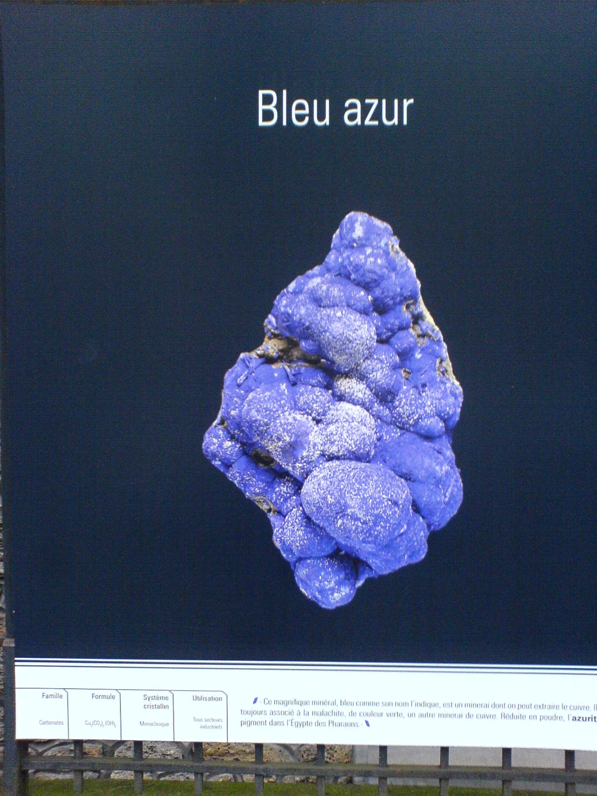
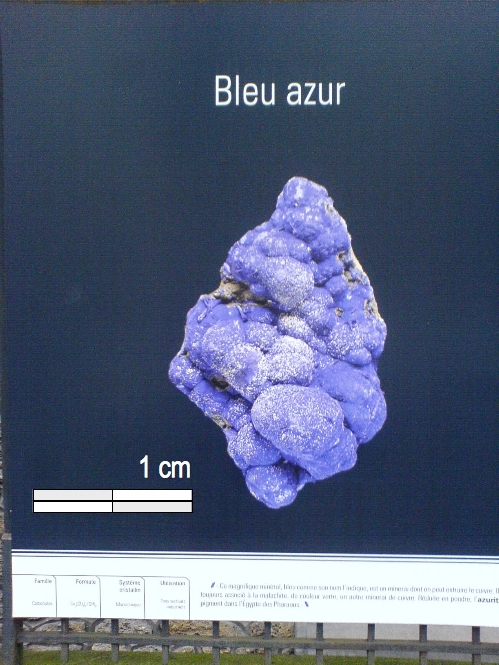

Nature is on display in a couple of nice photographic exhibit in Paris. It’s a great concept: oversize pictures on the walls or the fences of public buildings and spaces. The first exhibit, organized by Mines Paris Tech, a public teaching and research institution, presents crystals. The other one covers biotopes and biodiversity. In both cases we marvel in front of the magnification of beautiful inorganic and organic structures. The figure caption are short and informative. We learn about the features of the depicted items, and about the photographic techniques.
But one crucial piece of information is missing. We have no idea whatsoever of the scale of the pictures.
 Sometimes we can just guess it – say, when we look at a picture of a hornet, or of an orchid. But what about the azurite crystal? Untutored viewers can take it to be as small as a grain or dust, or as big as a boulder (provided, of course, that we have an idea of the size of grains of dust and of boulders). Suppose that that was actually the size of a grain of dust. Knowing that, we would appreciate the delicacy of the texture; we would have a completely different appreciation if the crystal was the size of a large boulder. We do not know how big was the object depicted in the poster, but look at how your perception is modulated by the presence of a graduated ruler.
Roberto: “My uncle, a geologist, conformed to the very useful practice of inserting objects or people in his pictures of rocks and strata. This explains why my aunt’s smile shows up in so many scientific papers.”